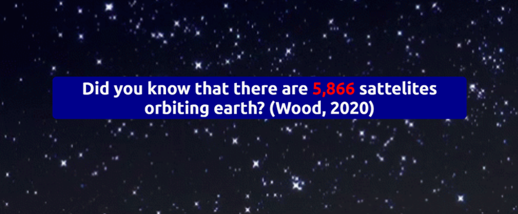
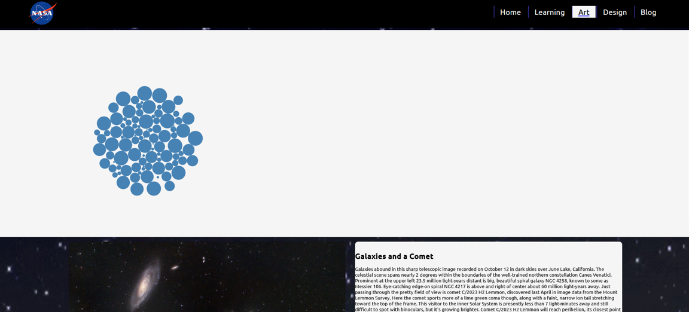

Welcome to the Blog
Sadly it's not space themed. This section of the site is really only for markers and those really, really interested in my academic work.
Article Quick selection:
Close Reading Critical Reflection Close Reading 2 Art Reflection CV Reflection Art, Data Visualization and representationClose Reading - Overview of Data Visualisation
What is being said:
The main reading for this blog is a chapter written Qi Li about Data Visualization. It mainly serves as a technical outline, with a particular focus being placed upon the various possible types of representation for data and also the history of data representation as a practice. There’s also an overview of the benefits of data representation, which are: Representing lots of data immediately; easier identification of patterns; easier quality control through identifying patterns; improved understanding of large- and small-scale data (Li, 2020: 18).
An important part of this reading is also what data visualization specifically is. Generally, when data representation is mentioned, it refers to something specific like graphs or software-based visualization, but this reading broadens those definitions by defining data visualization as “the transformation of data into information” (Li, 2020: 19). Key to this definition is the distinction between data and information. The former is defined by the reading “unprocessed information”, which becomes processed when it is assigned meaning by a human being and fed back into the system (Li, 2020: 21).
The reading also provides various examples of Data Visualization according to its definition, broken down into two categories. The first is information visualization, which represents abstract data in a visual way, allowing the user to extract meaning from it and therefore turn it to information. Examples given of this are Tables, Charts, Trees, Maps, Scatter-plots, Diagrams and Graphs. The second category is scientific visualization, which specifically focus on scientific data representation such as simulations, waveforms and volume to allow the drawing of conclusions from gathered data to create new information (Li, 2020: 22).
The last section of the reading focuses on the psychological benefits of Data Visualization through the lens of basic psychology and a more specific theory known as Preattentive Processing, which is a field of psychological study that seeks to understand how humans subconsciously process information before becoming truly aware of it (APA Dictionary, 2023). This is relevant to the reading because it is believed to be an important part of why data visualization is so effective. One of the strongest senses in a human is sight, and because of this providing visual data can help processing into information drastically (Li, 2020: 44).
What I think:
Overview of Data Visualization (Li, 2020) falls squarely into a category of readings that are vital for the theoretical framework that they provide. Having a foundation with which I can discuss and contemplate data visualization, especially when our next assignment so heavily focuses on it, should serve well going forwards. It’s also fine that the reading itself is largely surface level because it is, ultimately, just a foundation. Using this resource and the many, many other readings it cites, I can begin to build my own knowledge base to draw from going into future assignments.
One thing that is very nice to have from this reading is the wealth of examples it provides. Both in terms of more traditional usages like graphs and diagrams, but also with the more abstract uses, like the scientific forms of representation and the fact that geographical maps are, in fact, a form of data visualization. These examples allow me to discuss these methodologies with specific terminology and make me more aware of the types of data visualizations that exist. It even broadens my viewpoint by showing me some of the more obscure examples, which is useful because it’ll allow me to pick out more niche examples I like and wouldn’t have thought of before to use in my own projects.
Key to this are some strong definitions. The definitions given in this reading are concise but in depth, building that strong theoretical framework for analysis that we need as students to discuss our ideas with depth and nuance. Specifically, the definition for Data Visualization is so strong because it uses two other strong definitions, the one for data and the one for information, to construct data visualization as a process. By using this definition, I can be more aware of forms of data visualization I encounter in the wild and use them as inspiration for my own project. For example, using this definition I have come to realize that graphics/visuals used in videos are a form of data visualization. The pre-mission briefs in Ace Combat games are another interesting example, which take raw data like enemy numbers, object locations and flight routes and turn them into actionable information for the player to use in their missions. In other words, the idea of Data Visualization isn’t just something that’s exclusive to web design, instead it can be used in other mediums for the benefits of quick data visualization as well.
In conclusion, this reading is an excellent technical basis for further research. Because while it is neither comprehensive nor innovative, it provides a vital technical foundation for discourse and comprehension that can be built upon through further reading and engagement with the topic as the project continues.
How I plan to expand this further:
From class, I have two lines of inquiry that I wish to pursue to deepen my understanding of this topic going forward.
The first is a reading from Knaflic (2015), which expands upon the main reading by focusing more upon what one should or shouldn't do when creating data visualizations. Where Li discusses the basics, Knaflic discusses specifics, and between the two of them I have been able to form a more solid grasp on how to visualize data. There are also more Knaflic readings throughout the semester, which should help to expand my understanding even further as I read them.
The other resource I've found is Information is Beautiful. This website features numerous infographics, which all serve as great inspiration for my future work as I progress forwards with my new website for this semester. I’ve also been looking at the documentation for D3 alongside this, since using both in conjunction has allowed me to begin developing ideas for my data art piece.
Blog Essay 2: Critical Reflection – Proposed UI and UX.
Introduction:
This essay is a critical reflection upon the UI -and by extension UX- of my second semester website, which will be broken up into two halves. In the first, I will be discussing the elements that already exist in my site, and reflecting about what I think works, as well as what I think could be improved. In the second half, I will be discussing the plans that I need to implement going forwards, along with how I plan to implement them. Both will be supplemented by wireframes and images. This reflection will primarily be based on the text Storytelling with Data: A Data Visualization Guide for Business Professionals by Cole Knaflic (2015), with additional sources being used to supplement where necessary.
What I’ve already done:
The primary UI element I’m already using is my top bar for navigation.
This is the most important element for navigation since it’s always present and allows the user to quickly navigate to any page of my website with ease. I think that it is mostly sufficient so far for such a simple site, but I would still like to put more links in relevant parts of my site to guide users more deliberately around the different sections of the site to specifically direct their experience. Whatever I do implement, the most important part for me is that the site follows a three click rule. Because while the rule is technically a myth (Daivee, 2017), that doesn’t deduct from the fact that it’s a useful benchmark for ease of navigation on a site, especially on something as simple as the site for this project.
I also have a hamburger menu for mobile navigation:
This is a necessity, since my top bar would be massively oversized on smaller mobile devices, making the site incredibly unpleasant to navigate. I do feel as though my menu could use some work to get it looking more congruent with the rest of the site, but I have yet to be struck by any inspiration on how one could do that.
Even though I am yet to fully implement the data visualizing aspects of my site (or as Li would put it, the parts of my site that turn data into information (2020)), I do have some preattentive elements already.
The goal is to create a subconscious hierarchy in the audience’s mind using preattentive elements, where information associated with blue is of higher importance, while information associated with red is of maximum importance. I also use other elements, like size and boldness, to further differentiate important elements. By doing this, and using preattentive principles, I should hopefully be able to focus my audience’s attention where I want it to be (Knaflic, 2015).
The final element of my current site I’d like to note is a simple return to top function.
It may seem insignificant, but it’s one of many small touches that a truly successful website requires to thrive, along with the many unseen elements like semantic markup and micro formatting (the latter I have come to appreciate more using Zotero). The biggest part of making these elements work in my new site is finding a way to make them fit the site’s aesthetic, because while it is easy to take my old work and repurpose it, those solutions aren’t always perfect. I need to find new implementations, ones that fit my new site in both form and function if I want to truly get the most out of this process.
What I want to do:
The first idea I have, which I meant to include in the first submission but simply ran out of time for, is the ability to jump between sections/posts in my blog.

This would allow first time visitors to have an uninterrupted reading experience, while those who want to access a specific post could find what they’re looking for quickly. I also plan on including a list of articles at the top, which could be used to jump to selections quickly. The reason why I’m keeping to the linear format is because I want to have my blogs play out in the specific order to show my growth as a student, and by having all blogs visible and able to be read in order, I can tell the story of that growth far more effectively. On top of all that, I also need to make a separate setup for mobile, since the screen is generally too small for mobile. So, I need to come up with a second solution -possibly based off what I did for my essays last assignment- for allowing ease of use on mobile.
The next area for addition is my data art.
At this point I have a clear idea of what I want to do, although I’ll admit I may be a little over ambitious since I’m not sure exactly how to do it. In short, I want to show the sky being blotted out by satellites, with users being able to look in all directions to see the effects of this, to provoke thought about how humanity is already ruining our next step to the stars by being callous now. The main point though is that I will need to give A. enough information to let the user know how to interact with the art and B. an experience that works and is responsive across all device types.
The last area for addition is my learning page, which is the one page I haven’t started beyond a place holder.

My plan for my design page is to create something eye catching and engaging. The problem is that my aesthetic for the rest of the site has backed this section into a corner. The background, for one, means that the entire site needs to be built around readability against black, which is usually harder than readability against white. My NASA inspired palette also poses some issues since Red is currently being used as a highlight colour. This could potentially become an accessibility problem down the line since 7-10% of men alone are red-green colour blind (‘Color Blindness Facts & Statistics: Prevalence’, no date). This means it’s something I need to be aware of, especially with such a muted palette (Knaflic, 2015: 122). I also need to use the correct visuals for each type of data, but that’s something I’ll be able to get a better feel for once I start my work properly.
References:
‘Color Blindness Facts & Statistics: Prevalence’ (no date) Color Blindness. Available at: https://www.colour-blindness.com/general/prevalence/ (Accessed: 26 August 2023). Daivee (2017) ‘The 3-click rule: myth or fact?’, IEEE Brand Experience, 9 May. Available at: https://brand-experience.ieee.org/the-3-click-rule-myth-or-fact/ (Accessed: 26 August 2023). Knaflic, C. (2015) Storytelling with Data: A Data Visualization Guide for Business Professionals. 1st edn. Wiley. Li, Q. (2020) ‘Overview of Data Visualization’, in Li, Q., Embodying Data. Singapore: Springer Singapore, pp. 17–47. Available at: https://doi.org/10.1007/978-981-15-5069-0_2.Blog Essay 3: Close Reading – ‘What is Interaction for Data Visualization?’
Introduction:
This blog post is a close reading of What is Interaction for Data Visualization by Evanthia Dimara and Charles Perin (2020), an academic article using a variety of datapoints from resources made for multiple fields to try and draw up an inclusive definition of interaction, specifically in data visualization, for standardized aiding discourse.
What is being said in the reading:
The article uses a large array of other academic sources to make its points.
By looking at the wide array of sources, the article can create its understanding and definition from the broadest possible information. This is important in this case because one of the stated goals of the paper is to create an “inclusive” definition (Dimara and Perin, 2020: 2), which means creating a definition that includes as many relevant cases as possible while still excluding irrelevant ones. To do this, many cases need to be examined for reference.
The reason why this definition is so necessary is explained by the article itself, saying “by better understanding… enrich the quality of interaction in visualization systems and empower those who use them.” (Dimara and Perin, 2020: 2). By creating a solid definition for what interaction in data visualization is, the article standardizes discourse on the topic and as a result reduces the time spent sorting out misunderstandings based on conflicting ideas of what the concept is, ultimately resulting in better products.
The article discusses the benefits of data visualization as further contextualization, suggesting that it can “amplify cognition in active, human-driven data exploration” and it is “via interactive manipulation that ‘knowledge is constructed, tested, refined and shared’” (Dimara and Perin, 2020: 5). It also has the benefit of leveraging “humans’ natural abilities through new visualization shapes, modalities, and input technologies” which can improve accessibility (Dimara and Perin, 2020: 5). The article also provides further context by discussing some of the failings of interaction for data visualization, which are more related research about the topic and specific applications (Dimara and Perin, 2020: 5). The main thing to take away from this section is that interaction will -largely- improve data visualization because it allows the user to play with their data a little and come to understand it from more angles (Dimara and Perin, 2020: 5).
The first part of defining the internal relationship that makes up data visualization is explaining some of the noted properties and related terms. Useful related concepts in actions and entities (external and internal) are discussed and elaborated (Dimara and Perin, 2020: 4), as well as properties such as granularity (Dimara and Perin, 2020: 5). The article also briefly discusses related terms to interaction in Data Visualization, but points out that defining their relationship is hard to define without a concrete understanding of what that interaction is.
The article then creates a starting point for its definition, saying that it interaction in this context is “a dialogue between a human user and the visualization system over a central object of interest: the data.” (Dimara and Perin, 2020: 6). Interaction allows the user to have a back and forth with the machine, asking questions to recontextualize data to create understanding. This links back to Li (2020: 19), since interaction enhances the process of turning data into information that Li discussed in their article, with somewhat similar results to discussing the information with a person being accomplished as one person. The article itself also links to another theory, discussing the idea of Human Computer Interaction, which it uses to challenge and explore its own ideas to create a more complete understanding of the topic by using ideas from outside its own field (Dimara and Perin, 2020: 6).
This final definition the article produces is “Interaction for visualization is the interplay between… person and an interface reaction that is perceived as such.” (Dimara and Perin, 2020: 8), and it is followed by a series of scenarios and sub definitions for terms used. The important part is that there is a person, an interface, and interplay between the two that allows a person to receive a reaction that changes how the data is displayed when they put some kind of input into the system.
The article ends off by advocating for more flexibility, as well as allowing for flexibility in the definition, looking at future opportunities and challenges, acknowledging drawbacks and finally finishing by discussing the steps involved with reaching the final point and stating that their hope is “that our inclusive view of interaction will unify the visualization community under a common goal: the creation of visualization systems that empower those who use them.” (Dimara and Perin, 2020: 10).
What do I think?:
For starters, I want to acknowledge how dense this article is. It stuffs a lot into a very small amount of space, as can be seen by how long it took me to explain what was in the article, and that can make it somewhat hard to read. That said, that somewhat ended up being a good thing for me, since having to read and reread the article so many times caused me to develop a deeper understanding of the ideas within.
The concept of the article itself is a good one: provide a unified definition of Interaction, specifically for the field of Data Visualization, with the goal of facilitating discourse. One thing I have learned time and time again during university is how useful having the proper language and jargon to discuss a concept can be, both when exploring technical concepts and when partaking in academic discourse about your concept. Because speaking about something when you lack the tools is very hard, and articles like this equip you with those tools. My use of “tools” is deliberate, because having the right concepts and definitions to properly vocalize ideas when working with others is just as important as Git or HTML. It even helps when working alone because it makes finding information and help online easier.
How I plan to expand this further:
The first step in expanding on this article is to look at the many resources that it cites.
The article itself makes heavy use of initial seed papers and linked sources and is a reminder to us as the reader that we should do the same. I’d also like to look at how this article and Qi Li’s (2020) can be related to each other, since I feel that I started looking at an interesting connection in this blog post, one which I could very well expand upon in the future.
Finally, I want to apply the learnings I’ve gained from this reading to my own experience, examining things I find that fit within the definition to see how they use interaction to improve their experience. I’ve been seeing the fruits of the work I’ve done paying off this year already, and I even discussed data visualization with someone recently. This is a good sign because speaking with someone about a topic means you have a good grasp on it, and it also helps you understand the concept even further.
References:
Dimara, E. and Perin, C. (2020) ‘What is Interaction for Data Visualization?’, IEEE Transactions on Visualization and Computer Graphics, 26(1), pp. 119–129. Available at: https://doi.org/10.1109/TVCG.2019.2934283. Li, Q. (2020) ‘Overview of Data Visualization’, in Li, Q., Embodying Data. Singapore: Springer Singapore, pp. 17–47. Available at: https://doi.org/10.1007/978-981-15-5069-0_2.Blog Essay 4: Critical Reflection – Proposed Data Art Piece.
What nearly was:

My initial designs for the site. The first idea for my art is the fifth image.

My second idea for my art piece.
The art piece that this blog will focus on is the third and final idea I’ve had for my final data art piece. But before I discuss that, I want to quickly go over the history of the first two ideas because I’d like to show the process that got us to this point. In the original, I wanted to have a globe that was painted over by trails drawn behind satellites. In the second, I planned to make a sky and blot it out using red dots drawn at the location of space objects. Both ideas were supposed to tie into the site’s overall theme of space junk awareness, because I wanted to make something that could raise awareness along with being pretty.
I ended up scrapping both these ideas. Why? Because they weren’t possible within the constraints of my knowledge, D3 and the API’s I had available. D3 at it’s most basic is finnicky and I’m still only starting to understand it, and this certainly wouldn’t be D3 at its most basic. It would have required extremely custom solutions, which I would have little to no help creating. Still, I wasn’t ready to quit at that point, since I’m willing to take on a challenge if I think it’ll make me a better designer. What made me switch my plan was instead when I started looking at implementation, which I realized would be near impossible with the SSC API. So, ultimately, I was forced to move onto a new idea, and this is what I came up with.
Something Pretty:

Current Basic implementation.
Planned final implementation.
My new idea revolves around the NASA Astronomical Picture of the Day (APOD) API. To start off, I want to discuss what I have so far. I’ve managed to get a basic D3.Force Diagram going, and I have placeholders for the full sized image and the description, which will be accessible by clicking on the images in the force diagram. These are already being fed from the API, which I’ve got set up in a test configuration. The art and the explanation are deliberately being kept separate from each other to keep the actual art decluttered, create a hierarchy and decrease cognitive load (Knaflic, 2015). I’ve even implemented a function to make it so that the bubbles are slightly different sizes, which should make the art more visually appealing since uniformity is only enjoyable when it is a feature (Hogarth, 1753). That said, I do feel I need to scale this feature back a bit, because right now it’s too distracting and makes it so that some bubbles seem more important when in reality they are all the same level of importance.
Now I want to talk about my plans. I want to create a collection of bubbles, around 25, each with a random APOD displayed. But I want to add a bit more spice to that, so I plan on adding a few more features. Firstly, I want to make it so that the bubbles resize when the cursor is over them, for visual flair and to let the user play with physics a bit. Secondly, I want to give the user the ability to add their own bubbles by selecting a date from a drop-down menu, which will add a new bubble in and regenerate some of the old ones. This should make the art feel far more interactive, both because it’ll let the user control the content and because it adds another way to play with physics. Finally, I want to add the function to let users click on bubbles to see the full image and the explanation, which helps for learning and also increases the depth of engagement for users by allowing them to seek context when they want.
The biggest motivator behind this change in direction from my original ideas is the move to the APOD API, because when it comes to building a visually appealing piece of data visualization (which is my goal here) the SSC API is just not the right tool for the job. It’s extremely niche, with a small set of extremely detailed data that is not intended to be displayed in a way that is readable to the average person. The APOD on the other hand consists of a massive set of around ten thousand data points, thanks to daily updates since 1995 (NASA, 2023), all of which are designed to be aesthetically pleasing and human readable. In short, I’m choosing to use the better tool for the job, because I’d rather have something extremely solid than something that just barely passes the bar, even if it means I must kill my darling somewhat.
To end off, I want to focus on a key word throughout this blog/essay: interaction. Because as Li explains, data visualization is “the transformation of data into information” (Li, 2020: 19) and by making information interactive and letting users metaphorically turn it over in their hands, it increases the impact far more than just seeing all the raw information laid out in front of them. This is important to me, because while this art piece has ended up deviating from my initial goal of starting discourse about space junk, I still want it to be educational, and by showing the user pretty things and giving them the tools to learn more about them, I feel as though I can somewhat keep that goal of education alive.
References:
Hogarth, W. (1753) Chapter 3: Uniformity, Obelisk Art History. Available at: https://arthistoryproject.com/artists/william-hogarth/the-analysis-of-beauty/chapter-2-uniformity/ (Accessed: 23 October 2023). Knaflic, C. (2015) Storytelling with Data: A Data Visualization Guide for Business Professionals. 1st edn. Wiley. Li, Q. (2020) ‘Overview of Data Visualization’, in Li, Q., Embodying Data. Singapore: Springer Singapore, pp. 17–47. Available at: https://doi.org/10.1007/978-981-15-5069-0_2. NASA (2023) Astronomy Picture of the Day. Available at: https://apod.nasa.gov/apod/astropix.html (Accessed: 23 October 2023).Personal blog: Using HTML in my own life, and for the future.
As a final footnote on this website and year of Interactive Media, I want to break from the plan a bit and talk about my relationship with HTML. Because while this year has held many, many hardships (mostly involving submitting and D3) I do think I've learnt a lot from them. And I also think what I learnt from them has been extremely valuable.
Let's start by looking back: I am very proud of myself for getting my first site from where it started to where it ended. It was a long and very hard road, mostly because of my own errors, but it forced me to improve at a meteoric rate, so I'm grateful for it. In the end, I got a site out of it that looks pretty good, and a reminder of the power of never giving up on your goals. As for the second site, I think it's fine. I am still annoyed that at every step of the way I've had to scale back my ambition because what I want simply isn't realistic, but what can you do? D3 is simultaneously limitless and limiting, especially because of the fact that you have to go at it essentially alone. That last part has been hard, and I've cried more times working with D3 than at almost any other point in my academic career. I know I probably shouldn't say that, but these sites have literal blood, sweat and tears put into them, and I feel as though it's a disservice to the journey if I just say nothing happened along the way.
Finally, what's next? Well, I plan on building a CV/Portfolio site for myself during the holidays. Something to keep me busy, and to practice my skills a little more while they're still sharp. I might also teach my sister or some other person I know HTML, because teaching is the best way to truly grasp a topic. After that, I have no more plans. I don't plan on taking IM to the fourth year level, even if it is useful, because it's not the thing I'm most passionate about, so I guess the next time I'll use these skills is hopefully at a professional level. Somewhere, somehow, I'll find a way.
But until then, so long and thanks for all the fish.
(Note: this was written before I realized that we had another submission. Isn't that awkward?)
Blog Essay 5: Data Visualisation, Art, and Representation.
Introduction:
In this blog I will be discussing the concepts of representation, data visualization and art, before relating them back to this degree. Then I will discuss my own interaction with them, and how these concepts relate to the work we are doing in this degree.
What is Representation:
Jenny Kidd (2015) defines “Representation” as, well, something that can’t be defined in a single quote. It’s a complicated idea, built up from the work of many theorists, such as Stuart Hall, Roland Barthes and Ferdinand de Saussure, among others. It draws from the ideas of myth and semiotics and is a complex construct that can take a lifetime to understand.
To try and reduce it to just a paragraph, representation is the idea that signifier X = signified Y and the combination of the two makes a sign. Except it’s not so simple, and the context -historical, social and political- in which signifier X was constructed will affect how it relates to signified Y. That complex relationship between signifier and signified, along with how they form signs, is representation. Representation is in turn how communication and our view on reality is shaped (Kidd, 2015).
Something that’s worth remembering is that signifiers themselves hold very little value. They are shaped by their relationship to the signified and represent nothing on their own. Words, images, and even other sensory information like smells all have no meaning until they are connected to something that is signified, creating that relationship of representation (Kidd, 2015: 20).
What is Data Visualization:
Data Visualization is the process of converting raw data into information that can be understood and learned by a human. It has several benefits, such as representing large amounts of data immediately; easier identification of patterns; easier quality control through identifying patterns; improved understanding of large- and small-scale data sets (Li, 2020: 18).
Data visualization has the benefit of tapping into two major psychological attributes of humans to deliver information more effectively than unvisualized data: firstly, the sense of sight is -for most- our strongest, and information conveyed by it is quickly absorbed. Secondly, it allows for Preattentive processing, which is where the human brain processes information subconsciously before becoming actively aware of it (Li, 2020).
It can broadly be separated into two categories, information visualization and scientific visualization. The main distinction is that the former is traditional data visualizations that have existed for a long time, while the latter are only able to exist in this digital age where they can be rendered dynamically using modern processing power (Li, 2020: 22).
However, there is also one more side to data visualization that this definition does not cover: the inherent beauty of it. While it is “usually viewed as a tool to support analytic reasoning” (Viégas and Wattenberg, 2007), data visualization can be used for another purpose as well: aesthetic pleasure. In the past two decades, a wealth of data art has popped up. These utilize the same fundamental methods as traditional data visualization, but for very different purposes. These are intended to please the eye, rather than being made with the intent of converting data into information like with traditional data visualization (Viégas and Wattenberg, 2007: 1).
What is Art:
If representation is a topic as broad as a lake, then art is the whole ocean, both containing and being contained within the other two topics of this blog essay and with a complex relationship to both.
Art is, in its simplest, dictionary form, “a visual object or experience consciously created through an expression of skill or imagination. The term art encompasses diverse media such as painting, sculpture, printmaking, drawing, decorative arts, photography, and installation.” (Britannica, 2023). Except this is already a terrible definition because it completely ignores any medium that’s not visual. Is a song not art? Does a poem in braille suddenly not qualify? Is a meal prepared by a good chef not a form of art? Truthfully, the line of where art ends and a technical production begins is one of the most subjective topics in all of academia, to the point where most are willing to throw their hands up in the air and say it’s up to personal preference.
While this essay is not concerned with creating a complete definition for “Art”, it does need a basic one for this essay. The definition I’m choosing to go with is art as “work of art in the descriptive sense is (1) an artifact (2) upon which some society or some sub-group of a society has conferred the status of candidate for appreciation” (Dickie, 1969: 254). I will alter this definition somewhat, specifically changing the idea that it needs to be for appreciation, to instead say that it should be a candidate for evoking emotion with intent. Under this definition, any artifact that is accepted/posited by a group of people as a work for the sake of evoking an emotional response with an intent is a work of art.
How do they relate:
With these three definitions laid out, it should already be becoming clear the complex web which is weaved between art, data visualization and representation.
Firstly, data visualization is in all forms a type of representation. It’s a sign made up of a signifier and signified, therefore giving it semiotic relevance and making it a representation of something at the very least. What it represents can also exist upon two levels: the data visualization can represent itself, and it can also represent the data used to create it.
Secondly, data visualizations can be considered art. There are both data visualizations that are created within a group that intend them to be emotionally evocative, and those that are deemed emotionally evocative by society. In fact, under this definition of art, many data visualizations can be considered art in their own way, even if they weren’t initially created as such. Data visualizations are often designed to be strongly provocative, evoking a response in the user to either assist them in memorizing data or as a call to action.
So, data visualization can exist as art on two levels: firstly, when it is supposed to be the object of interest itself, creating a response by presenting something that draws the eyes in with intent. Secondly, it can represent information that is supposed to draw a reaction from the audience by displaying it in a way that maximizes impact. Already, this creates two approaches to the medium, one of which is unique to said medium. But there’s another approach.
In this third approach, one combines both levels of data visualization as an art form. Where the form of representation is supposed to be evocative, but as is the data it represents. In this unique case, the data art becomes something with layers to be peeled back, creating something that requires thought and effort from the audience to engage with. This could be argued as the final form of data visualization, since the original purpose was to extract information and communicate it (Viégas and Wattenberg, 2007), and making it so that the audience are participants in that process would no doubt lead to better results. At the same time, it also represents a completely different purpose, one interested with emotion and what the audience feels from seeing the presentation and the data, rather than what they learn. Most of all, these two ideas are not diametrically opposed. They can exist harmoniously as well, allowing a piece of data visualization art to be both educational and evocative.
Why are they relevant?
Or, more specifically, why are they relevant to us, as Interactive Media students? Well, immediately, we’re making data art of our own. Understanding what it is and how to apply it to our own work can have great benefits for us, since it gives us the ability to look at the concept and comprehend it in new ways that we hadn’t thought of before now. For one, I have somewhat of a better idea about where I’m going to take my second piece now, in a direction that incorporates more beauty. My SVG is my canvas, and my data is my brush strokes. The part I need to figure out is how my paint will sit.
Beyond that, we’re in third year now. That means we have three years of academic experience under our belts. We’ve read numerous theories, from Hall to Benjamin, and these have shaped our perspective on art. Now we’re getting to the fun part: we get to decide our own definitions. That’s why I chose the Dickie definition as my foundation because it fits closely with my own beliefs: art isn’t just something that is traditionally art, it’s anything that people intend to be evocative. At the same time, what I particularly like about the Dickie definition is that it isn’t just predicated on intent. Because certain things that aren’t intended for artistic merit -a beautiful field, a well-built bridge, a prosthetic limb, or even a data visualization- can still be seen as art because they evoke emotion in people, even if it takes a transformation by someone else like a painter or a photographer to truly capture that emotion with intent (Dickie, 1969: 254).
Beauty is subjective, as is art, which is why Data Visualization as an artform is so bizarrely situated. Because depending on who you ask, it’s either always been a form of art, since its inception, since there has always been a type of beauty to it and it’s often intended to invoke emotion, or you could argue that it’s only become art in the past 20 years. After the advent of making deliberate art pieces using data came about. You could even argue that it’s never been art and never will be because it has no aura or soul and is the gormless production of a machine, but then you start sounding like Walter Benjamin.
Whatever the case, wherever you or I may stand, there is one thing I know for sure: reflecting on this blog, on what makes data visualization art, has given me some inspiration for what my final piece is going to be. It’s also made me give thought to how I see art, and is possibly even the beginning of a longer process of reflection.